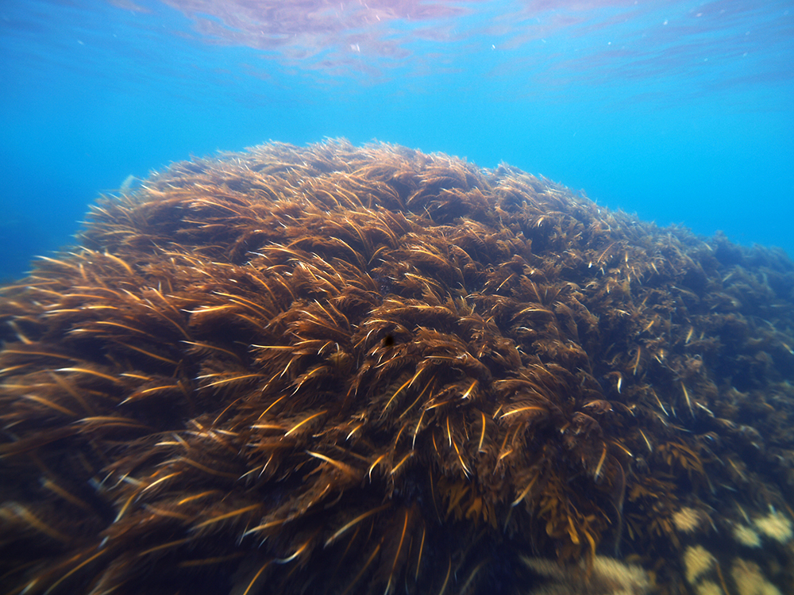
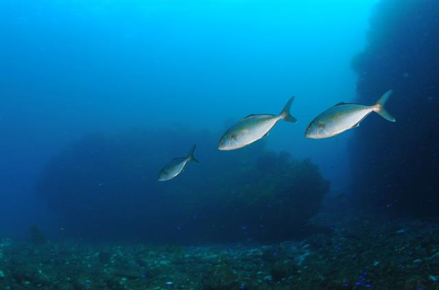
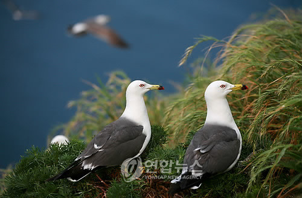

독도는 대한민국의 일부로 인정되는 섬으로, 동해에 위치해 있다.
이 섬은 자연적으로 아름다운 풍경을 자랑하며, 다양한 해안선과 바다 생태계를 보유하고 있다.
독도는 자연 보호 지역으로 지정되어 있어서,
그 지역의 풍부한 자연 생태계를 보호하고 유지하기 위한 다양한 노력이 이루어지고 있다.
해조류 중에는 바다마조류, 조류, 미역 등이 풍부하게 서식하고 있다. 이러한 해조류는 독도의 바다를 더욱 풍성하게 만들어주는 중요한 역할을 한다.
독도에 서식하는 미역 이미지
각종 해산물을 제공하는 깊은 바다와 바다 바닥의 암초는 다양한 어류들이 서식하는 이상적인 환경을 제공합니다. 대표적으로는 참치, 갈치, 멸치, 오징어 등이 있으며, 이들 어류들은 지역 주민들의 주요 어촌 생활과 어업의 일상을 형성합니다.
독도에 서식하는 잿방어 이미지
독도에 서식하는 인상어 이미지
또한, 독도와 주변 해역은 다양한 조류들의 서식지로도 알려져 있다. 각종 조류들이 여기서 번식하고 휴식을 취하는데 이상적인 환경을 제공한다. 특히 해안가와 해안저며, 바위턱 등의 지형은 조류들에게 안정적인 서식지를 제공한다.
독도에 서식하는 괭이갈매기 이미지